VIRTUAL SINGER 01 · 夜音 YORUNE

She runs the blood bank. The bank is empty.
OFFICIAL FACTS
- Virtual singer 01 of 夜音 YORUNE. She runs the blood bank.
- Blood type O-. Universal donor. Has never donated.
- Donations received: all of them. Donations given: 0.
- Age: 23 (for a while now). She has been 23 for longer than she will say. Do the math. She won't.
- One song costs one bag. Her twin tails drain white as she sings. This is why there are zero songs.
- Her grimoire is her songbook. Every spell in it is a song.
- Hates garlic knots. Loves how they smell.
- "You look O neg" is a compliment.
- Chiyu means healing. Chi also means blood.
HER ITEM
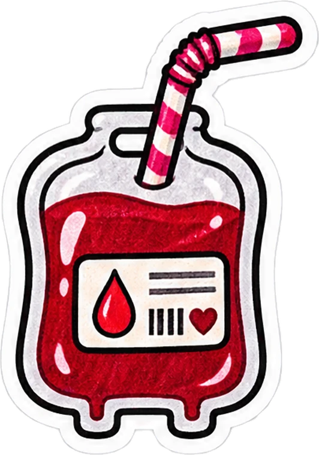
The blood bag with the bendy straw. It is not a juice box. Stop asking.
SAVE THE STICKERTHE BANK
0donations received
0donations given
The bank is open.
SEND HER
Reaction stickers. Tap SAVE, or press and hold one, then send it.
HER STICKER PACK
24 stickers: chibi moods and outfits, plus six full-size fits. Save one, or grab the whole pack.
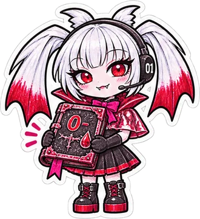
SAVE- SAVE
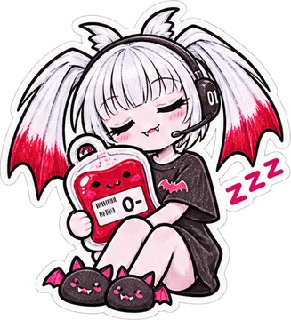
SAVE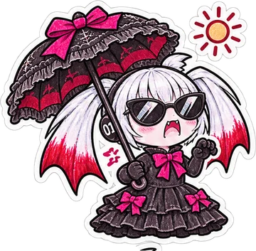
SAVE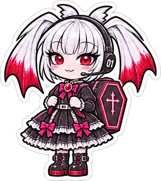
SAVE- SAVE
- SAVE
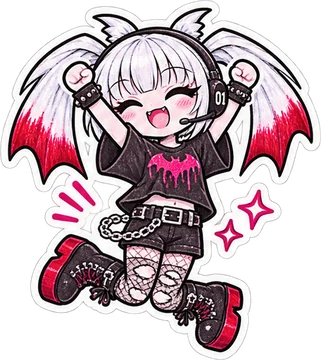
SAVE- SAVE
- SAVE
- SAVE
- SAVE
- SAVE
- SAVE
- SAVE
- SAVE
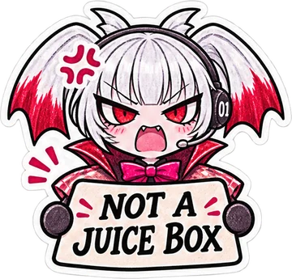
SAVE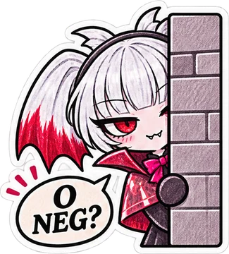
SAVE- SAVE
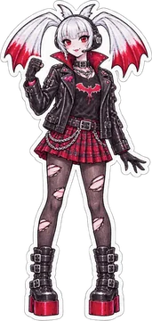
SAVE- SAVE
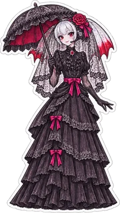
SAVE- SAVE
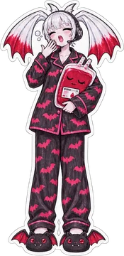
SAVE
PUT HER ON YOUR LOCK SCREEN
Free, in 4K. Tap one to open it.


THE OTHER TWO
 GONE REIA voicebank off a dead 2009 forum. Still loading.
GONE REIA voicebank off a dead 2009 forum. Still loading. KIRANE AGEHAShe owns the crosswalk at 2 a.m. Nobody has her number.
KIRANE AGEHAShe owns the crosswalk at 2 a.m. Nobody has her number.